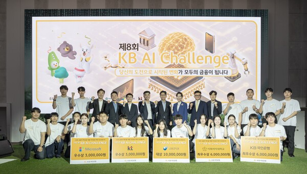
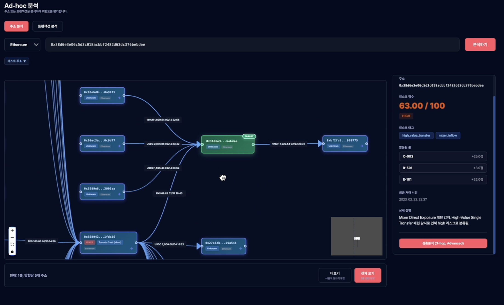
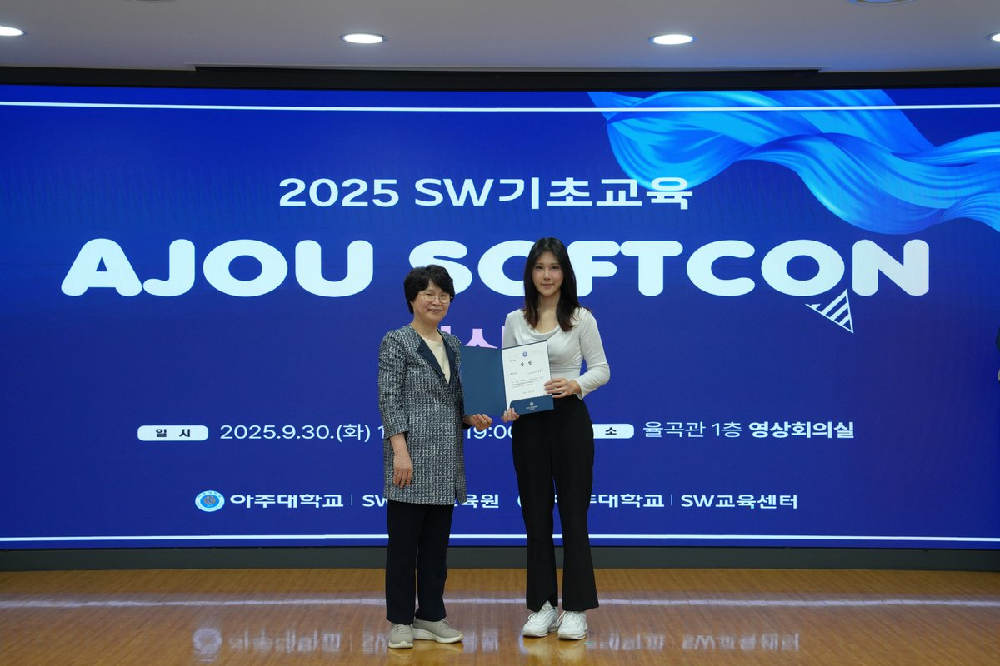

Ajou University, Suwon
Yelim Lee
이예림 · Undergraduate, Ajou University
I am an undergraduate student in Software and Computer Engineering at Ajou University, currently working as an AI Research Intern at INEEJI on AI agents that read weather charts for forecasters.
I am interested in AI agents, AI systems, and blockchain security, and more broadly in building technology that people can trust. I also enjoy sharing what I learn and talking with others about it.
News
| Sep 2026 | Joined INEEJI as an AI Research Intern, working on weather-forecasting AI agents. |
|---|---|
| Sep 2026 | Our team received the Excellence Award at the 8th KB Future Finance AI Challenge 🎉 |
| Aug 2026 | Attended DEF CON 34 in Las Vegas through the Global Cyber Frontier training program 🇺🇸☠️ |
| Apr 2026 | Joined Financial Friends as a reporter for the Financial Services Commission 🎬 |
| Dec 2025 | TRACE-X received the Excellence Award in the research track at AJOU SOFTCON 2025-2 🎉 |
Experience
-
 AI Research Intern, INEEJI Sep 2026 – PresentAlphaWeather — AI assistant for weather forecasters
AI Research Intern, INEEJI Sep 2026 – PresentAlphaWeather — AI assistant for weather forecasters- Designed a crop, color-separation and brightness-based background-removal tool, raising pressure-system location and value recognition from 24.9% to 99.7% (vs. Gemma without the tool)
- Diagnosed a crop-range bottleneck in a station-temperature extraction CNN, improving accuracy from 72.7% to 90.4% (GPT-4o 48%, Gemini 62% under the same setup)
- Experimenting with fine-tuning open-source Gemma and tool calling for air-gapped deployment, toward a model that works across chart types
- Reviewed a rubric-based VQA evaluation set and built an automated QA-generation pipeline
-
Reporter | Financial Friends Apr 2026 – PresentFinancial Services Commission (금융위원회)
- Producing 7 policy explainer videos for the FSC YouTube channel (ongoing)
- Topics: security tokens (STO), illegal crypto-asset operators, single-stock leveraged products
-
 Member, Blockchain at Yonsei (BAY, 16th) Jul 2025 – Jun 2026Development & Research Team
Member, Blockchain at Yonsei (BAY, 16th) Jul 2025 – Jun 2026Development & Research Team- Led crypto-monitoring sessions; studied DeFi/AML trends
- Articles on Yonsei Blockchain Lab (Medium):
-
Founder, Paletting Aug 2023 – Dec 2023Values-based matching platform
- Designed survey-driven matching algorithm; led a team of 4
- Acquired 500+ users via social media marketing
Selected Projects
-
KB AI

집지기: An LLM Agent for Young Adults' Housing Decisions with RDB-RAG8th KB Future Finance AI Challenge (with Minjae Choi), Excellence AwardListing-retrieval accuracy 70% → 96% · 30 interviews with brokers and tenants
-
SOFTCON

-
SOFTCON

XAI-AML: Explainable Suspicious Transaction Detection and Automated STR Report GenerationAJOU SOFTCON 2025, SW Fundamentals Track, First Prize
More projects (3)
Awards & Honors
| 2026 | Excellence Award, 8th KB Future Finance AI Challenge |
|---|---|
| 2025 | Excellence Award, AJOU SOFTCON 2025-2 (Research Track) |
| 2025 | Award, Paran Semester Program (Team 말해뭐해, TRACE-X) |
| 2025 | First Prize, AJOU SOFTCON 2025 (SW Fundamentals) |
| 2025 | Excellence Award, 5th SW Convergence Startup Camp |
| 2025 | Selected, Student Startup 300+ Program (Trusticket) |
| 2024 | 4th Place, Future Library Policy Idea Hackathon |
Education
-
Ajou University Mar 2023 – PresentB.S. in Software and Computer EngineeringMicro-Degree in Blockchain Programming
-
AJOU × AWS Cloud Camp Mar 2026Completed · Cloud9, Lambda, EC2
Skills
- Proficient
- Python, C, C++, Java, Git
- Experienced
- PyTorch, TensorFlow, Docker, JavaScript, Solidity
The best way to reach me is via yelim2849@gmail.com.